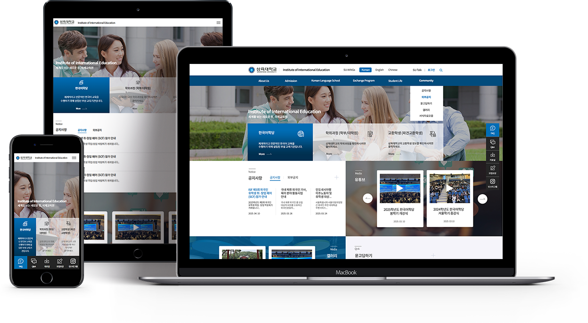

Year. 2025. 04 ~ 2025. 05
삼육대학교 국제교육원 홈페이지가 오래전에 만들어져서 전체적인 리뉴얼이 필요하다고 요청이 왔습니다.
유튜브 영상 중심으로 학생들이 활동하는 모습을 메인화면에 보여주고 싶다고 하였고,
전체적으로 단정하고 깔끔한 느낌의 홈페이지를 요구했습니다.
디자인 100% + 퍼블리싱 100%
기존 홈페이지의 포인트 컬러인 파란색을 사용하였고
메인화면에서 학생들이 가장 많이 이용하는 메뉴를 바로가기로 보이게 했습니다.
유튜브 영상을 미니 슬라이더 형식으로 만들어서 활성화되게 보이도록 했습니다.
공지사항과 기타 게시판에 대한 최신글을 강조했습니다.
학교측에서 디자인이 깔끔하고 심플해서 가독성이 좋다는 평을 받았습니다.